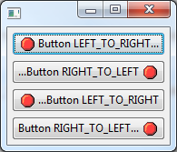

Platform Changes
This API is comprised of two basic concepts:
The user interface model: The content of this model describes the structure of the user interface. The Eclipse Platform reacts to changes in this model by updating the presentation, and the complete model is now available through the new API.
Note that the model represents everything on the screen and these elements can be modified by your code (see the example below).
IEclipseContext / Dependency Injection (DI): Contexts are containers of UI runtime state including all the available services. The typical Eclipse Platform 4 pattern is that contributions are created and configured through dependency injection based on state and services found in the local context for that model element.
Here are a few links to more information about the UI Model, the services and DI (the Javadoc and supporting Eclipse documentation will be available before Kepler is released):
There is quite a lot of information already available for Eclipse Platform 4. While parts of the API are just being formalized now, most of the concepts and API existed in provisional form in previous Eclipse 4 releases.
Just to give a taste of what working in a modeled UI is all about, here's a code snippet showing how to get a 'standard' Command handler to toggle the visibility of the 'Quick Access' text field that appears in the top trim. First we gain access to the model by getting the MApplication as a 'service'. Form there we can access the EModelService and use it to find the model element representing the search in the UI. Then it's just a simple matter of toggling the element's 'toBeRendered' flag to get it to (dis)appear.
public Object execute(ExecutionEvent event) throws ExecutionException {
IWorkbenchWindow window = HandlerUtil.getActiveWorkbenchWindowChecked(event);
MApplication theApp = (MApplication) window.getService(MApplication.class);
MWindow activeWin = theApp.getSelectedElement();
EModelService ms = activeWin.getContext().get(EModelService.class);
EPartService ps = activeWin.getContext().get(EPartService.class);
MToolControl search = (MToolControl) ms.find("SearchField", activeWin);
if (search != null) {
search.setToBeRendered(!search.isToBeRendered());
window.getShell().layout(true, true);
}
return null;
}
Equinox Changes
SWT Changes

